Ba.ıhan Lin
I am a Ph.D. candidate pursuing Computational Neuroscience in the Center for Theoretical Neuroscience and Zuckerman Mind Brain Behavior Institute at Columbia University. I develop neuroscience-inspired AI systems and apply ML to understand human brains (Neuro ↔ AI).
I graduated from the University of Washington, Seattle (UW), as part of the NIH-funded Computational Neuroscience Training Program, with a B.S. in Applied & Computational Mathematics and a B.A. in Psychology with Honors. I still maintain close collaborations and affliations with Columbia Department of Systems Biology and UW Department of Applied Mathematics.
I am into:
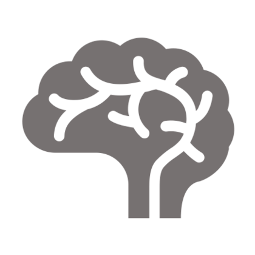
brain
intelligence
topology
psychology
design
perception
How to best visualize high-dimensional dynamic data? How to generate creative design computationally given simple aesthetic prior? How to model human creativity? How to generate creative processes with state-space language?
Research
I am very grateful to have mentors and collaborators with whom I have the honor to work on various interesting problems spanning neuroscience (NS), machine learning (ML), computer vision (CV), geometric/topological inference (GT), systems biology/genomics (SB), speech processing (SP), applied mathematics (AM), human-computer interaction (HCI), information theory (IT), and translational medicine/psychiatry (TM). I also maintain close industrial collaborations with IBM Research and Microsoft Research.
| From | To | At | With | Published | On |
|---|---|---|---|---|---|
| 2017 | now | my own time | mostly single-authored | [P6][P5][P2][C6][C2][E3] | NS ML CV IT GT SB HCI SP |
| 2017 | now | IBM | CompNeuro & AI Foundations Groups | [P7][P3][C5][C3][C1][E6][E4] | NS ML CV GT TM |
| 2017 | 2017 | Microsoft | EPIC & HCI Groups | [P1] | NS CV HCI |
| 2018 | now | Columbia | Visual Inference Lab (PI: Kriegeskorte) | [P4][C4][E5] | NS ML CV GT |
| 2018 | now | Neuro Theory Center (PI: Qian) | [P2][C2] | NS ML CV GT IT | |
| 2018 | 2018 | Math Genomics Lab of DSB (PI: Rabadan) | [E5][E3] | SB ML GT | |
| 2017 | 2017 | Comp Bio Lab of CS (PI: Pe’er) | [E2] | SB ML TM | |
| 2017 | 2017 | UW | UbiComp Lab of CSE & EE (PI: Patel) | HCI ML TM | |
| 2015 | 2017 | Institute for Protein Design (PI: Baker) | [J5] | SB | |
| 2016 | 2016 | Biophysics Lab of Applied Math (PI: Qian) | AM SB | ||
| 2014 | 2016 | Vision Neuroscience Lab (PI: Olavarria) | [J6][E1] | NS CV | |
| 2014 | 2017 | BIME | State Key Lab of Pathogen & Biosecurity | [J4][J3][J2][J1] | SB AM TM |
| 2013 | 2013 | BGI | Personalized Genome Group | SB TM |
Publications
Types: peer-reviewed journals (J), peer-reviewed conference proceedings (C), peer-reviewed extended abstracts (E), arXiv preprints / manuscripts (P).
25 total = 6 J + 6 C + 6 E + 7 P, with 131 citations.
Feel free to click on abstract to learn more, or [ expand all abstracts ]
ongoing...
-
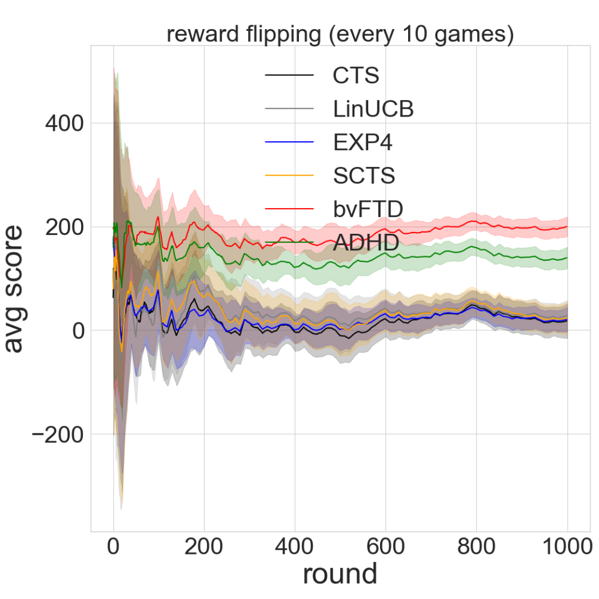[P7] Unified Models of Human Behavioral Agents in Bandits, Contextual Bandits and RL
Baihan Lin, Guillermo Cecchi, Djallel Bouneffouf, Jenna Reinen, Irina Rish
under review
[ arXiv ] [ bibTex ] [ code ] [ abstract ]Artificial behavioral agents are often evaluated based on their consistent behaviors and performance to take sequential actions in an environment to maximize some notion of cumulative reward. However, human decision making in real life usually involves different strategies and behavioral trajectories that lead to the same empirical outcome. Motivated by clinical literature of a wide range of neurological and psychiatric disorders, we propose here a more general and flexible parametric framework for sequential decision making that involves a two-stream reward processing mechanism. We demonstrated that this framework is flexible and unified enough to incorporate a family of problems spanning Multi-armed bandits (MAB), contextual bandits (CB) and reinforcement learning (RL), which decompose the sequential decision making process in different levels. Inspired by the known reward processing abnormalities of many mental disorders, our clinically-inspired agents demonstrated interesting behavioral trajectories and comparable performance on simulated tasks with particular reward distributions, a real-world dataset capturing human decision-making in gambling tasks, and the PacMan game across different reward stationarities in a lifelong learning setting.
-
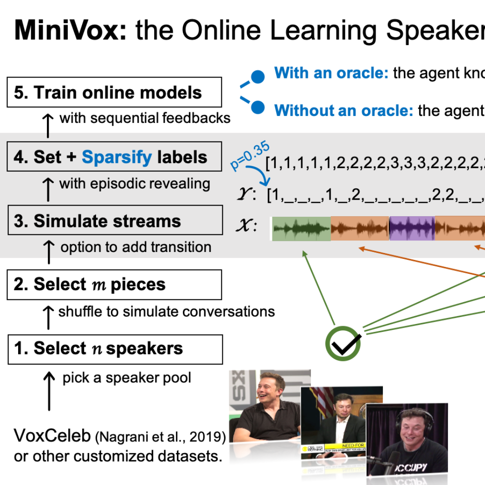[P6] Speaker Diarization as a Fully Online Learning Problem in MiniVox
Baihan Lin, Xinxin Zhang
under review
[ arXiv ] [ bibTex ] [ code ] [ demo ] [ abstract ]We proposed a novel AI framework to conduct real-time multi-speaker diarization and recognition without prior registration and pretraining in a fully online learning setting. Our contributions are two-fold. First, we proposed a new benchmark to evaluate the rarely studied fully online speaker diarization problem. We built upon existing datasets of real world utterances to automatically curate MiniVox, an experimental environment which generates infinite configurations of continuous multi-speaker speech stream. Secondly, we considered the practical problem of online learning with episodically revealed rewards and introduced a solution based on semi-supervised and self-supervised learning methods. Lastly, we provided a workable web-based recognition system which interactively handles the cold start problem of new user's addition by transferring representations of old arms to new ones with an extendable contextual bandit. We demonstrated that our proposed method obtained robust performance in the online MiniVox framework.
-
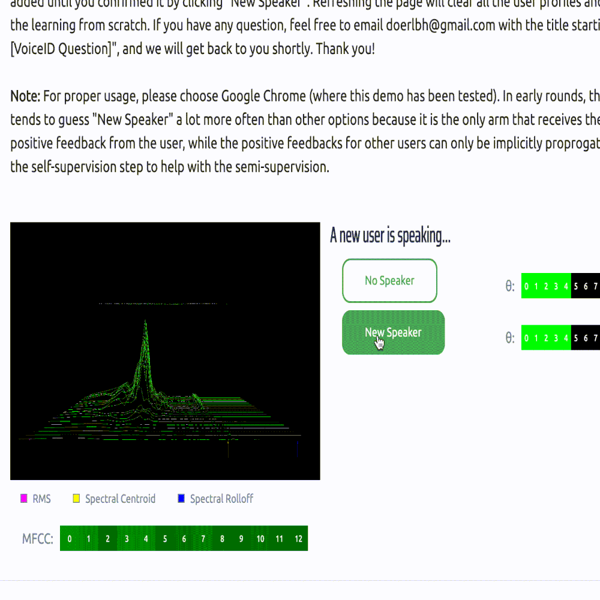[P5] VoiceID on the fly: Real-time Register-free Online-learning Speaker Recognition
Baihan Lin, Xinxin Zhang
under review
[ arXiv to come ] [ bibTex ] [ demo ] [ abstract ]We proposed a novel AI framework to conduct real-time multi-speaker recognition without prior registration by learning the speaker identification on the fly. We considered the practical problem of online learning with episodically revealed rewards and introduced a solution based on semi-supervised and self-supervised learning methods in a web-based system.
-
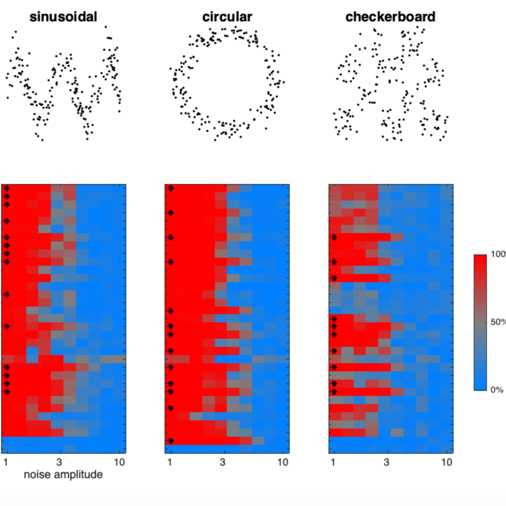[P4] Adaptive Geo-Topological Independence Criterion
Baihan Lin, Nikolaus Kriegeskorte
under review
[ arXiv ] [ bibTex ] [ code ] [ abstract ]Testing two potentially multivariate variables for statistical dependence on the basis finite samples is a fundamental statistical challenge. Here we explore a family of tests that adapt to the complexity of the relationship between the variables, promising robust power across scenarios. Building on the distance correlation, we introduce a family of adaptive independence criteria based on nonlinear monotonic transformations of distances. We show that these criteria, like the distance correlation and RKHS-based criteria, provide dependence indicators. We propose a class of adaptive (multi-threshold) test statistics, which form the basis for permutation tests. These tests empirically outperform some of the established tests in average and worst-case statistical sensitivity across a range of univariate and multivariate relationships, offer useful insights to the data and may deserve further exploration.
-
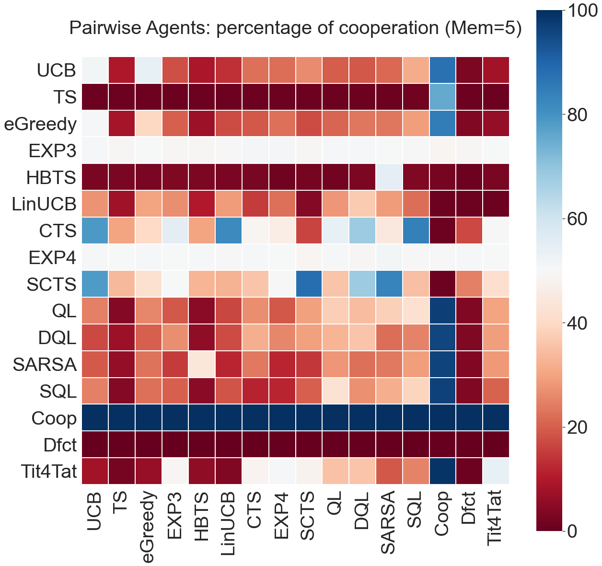[P3] Online Learning in Iterated Prisoner's Dilemma to Mimic Human Behavior
Baihan Lin, Djallel Bouneffouf, Guillermo Cecchi
under review
[ arXiv ] [ bibTex ] [ code ] [ abstract ]Prisoner's Dilemma mainly treat the choice to cooperate or defect as an atomic action. We propose to study online learning algorithm behavior in the Iterated Prisoner's Dilemma (IPD) game, where we explored the full spectrum of reinforcement learning agents: multi-armed bandits, contextual bandits and reinforcement learning. We have evaluate them based on a tournament of iterated prisoner's dilemma where multiple agents can compete in a sequential fashion. This allows us to analyze the dynamics of policies learned by multiple self-interested independent reward-driven agents, and also allows us study the capacity of these algorithms to fit the human behaviors. Results suggest that considering the current situation to make decision is the worst in this kind of social dilemma game. Multiples discoveries on online learning behaviors and clinical validations are stated.
-
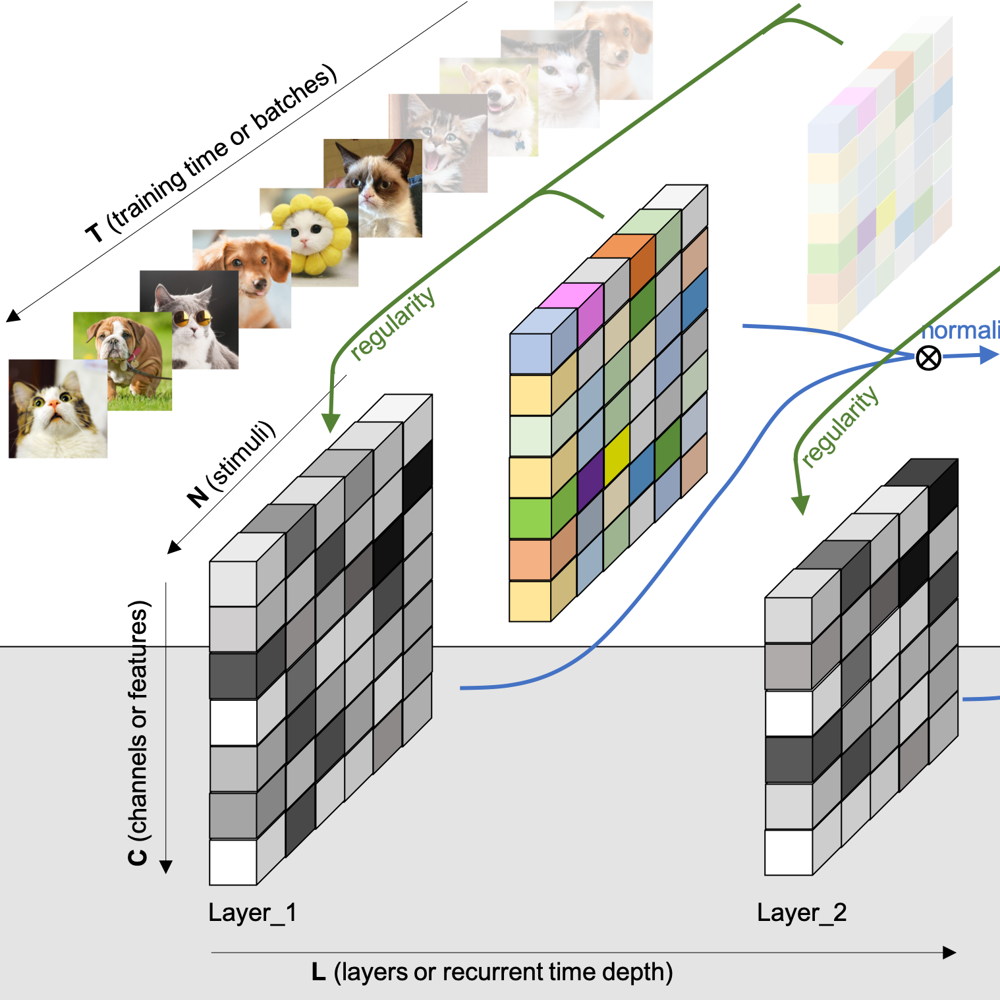[P2] Constraining Implicit Space with MDL: Regularity Normalization as Unsupervised Attention
Baihan Lin
under review
[ arXiv ] [ bibTex ] [ code ] [ abstract ]Inspired by the adaptation phenomenon of neuronal firing, we propose the regularity normalization (RN) as an unsupervised attention mechanism (UAM) which computes the statistical regularity in the implicit space of neural networks under the Minimum Description Length (MDL) principle. Treating the neural network optimization process as a partially observable model selection problem, UAM constrained the implicit space by a normalization factor, the universal code length. We compute this universal code incrementally across neural network layers and demonstrated the flexibility to include data priors such as top-down attention and other oracle information. Empirically, our approach outperforms existing normalization methods in tackling limited, imbalanced and non-stationary input distribution in computer vision and reinforcement learning tasks. Lastly, UAM tracks dependency and critical learning stages across layers and recurrent time steps of deep networks.
-
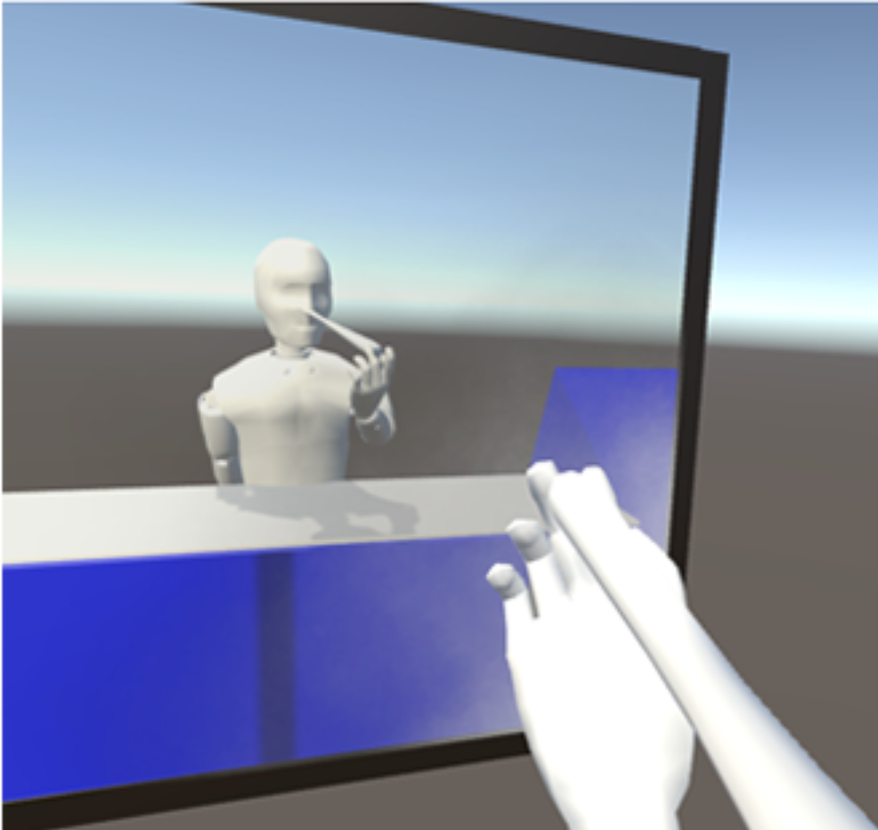[P1] Elongated arm reach after a Pinocchio illusion in Virtual Reality
Mar Gonzalez-Franco, Christopher Berger, Baihan Lin, Bigna Lenggenhager, and Jaron Lanier
manuscript in preparation
[ abstract ]Perceived extension of the reach of one’s arm was observed in healthy humans after eliciting a Pinocchio Illusion—whereby a participant’s nose is illusorily elongated—in Virtual Reality. Self-administered tapping on the tip of the nose of the participants’ virtual avatar (using a hand-held controller) while the nose of the avatar slowly grew, produced a Pinocchio illusion an implicit outward drift in the participants’ arm, and the elongation of the perceived reach of their arm. We found a positive correlation between the extent of the implicit outward drift of the participants arm and the perceived reachability of distal objects. These results were found, both when the participants’ real nose was stimulated and when it was not. These findings are discussed in the context of theories on body schema and ownership, and open new avenues for hand grasp interaction with virtual objects out of arm’s-reach inside immersive setups.
2020
-
 [C6] Keep It Real: a Window to Real Reality in Virtual Reality
[C6] Keep It Real: a Window to Real Reality in Virtual Reality
Baihan Lin
IJCAI 2020
[ arXiv ] [ bibTex ] [ code ] [ abstract ]This paper proposed a new interaction paradigm in the virtual reality (VR) environments, which consists of a virtual mirror or window projected onto a virtual surface, representing the correct perspective geometry of a mirror or window reflecting the real world. This technique can be applied to various videos, live streaming apps, augmented and virtual reality settings to provide an interactive and immersive user experience. To support such a perspective-accurate representation, we implemented computer vision algorithms for feature detection and correspondence matching. To constrain the solutions, we incorporated an automatically tuning scaling factor upon the homography transform matrix such that each image frame follows a smooth transition with the user in sight. The system is a real-time rendering framework where users can engage their real-life presence with the virtual space.
-
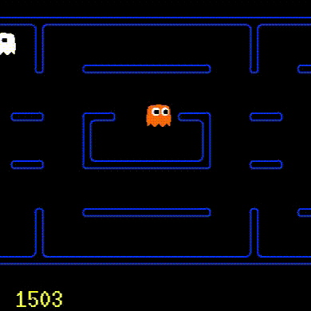[C5] A Story of Two Streams: Reinforcement Learning Models from Human Behavior and Neuropsychiatry
Baihan Lin, Djallel Bouneffouf, Guillermo Cecchi, Jenna Reinen, Irina Rish
AAMAS 2020
[ arXiv ] [ slides ] [ bibTex ] [ code ] [ video ] [ abstract ]Drawing an inspiration from behavioral studies of human decision making, we propose here a more general and flexible parametric framework for reinforcement learning that extends standard Q-learning to a two-stream model for processing positive and negative rewards, and allows to incorporate a wide range of reward-processing biases -- an important component of human decision making which can help us better understand a wide spectrum of multi-agent interactions in complex real-world socioeconomic systems, as well as various neuropsychiatric conditions associated with disruptions in normal reward processing. From the computational perspective, we observe that the proposed Split-QL model and its clinically inspired variants consistently outperform standard Q-Learning and SARSA methods, as well as recently proposed Double Q-Learning approaches, on simulated tasks with particular reward distributions, a real-world dataset capturing human decision-making in gambling tasks, and the Pac-Man game in a lifelong learning setting across different reward stationarities.
2019
-
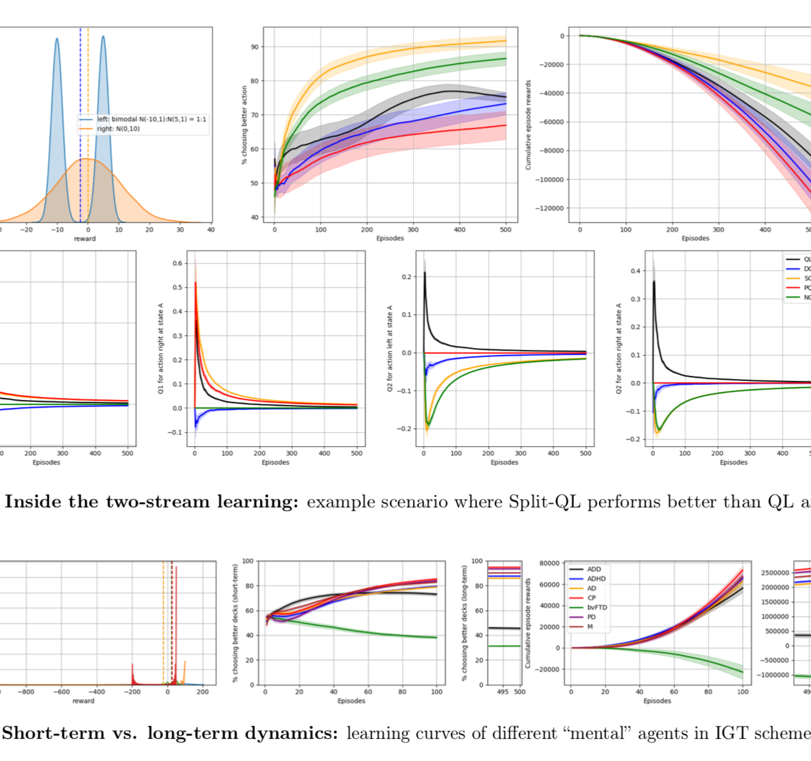[E6] Reinforcement Learning Models of Human Behavior: Reward Processing in Mental Disorders
Baihan Lin, Guillermo Cecchi, Djallel Bouneffouf, Jenna Reinen, Irina Rish
NeurIPS 2019 Workshop on Biological & Artificial RL (BARL)
[ arXiv ] [ poster ] [ bibTex ] [ code ] [ abstract ]Drawing an inspiration from behavioral studies of human decision making, we propose here a more general and flexible parametric framework for reinforcement learning that extends standard Q-learning to a two-stream model for processing positive and negative rewards, and allows to incorporate a wide range of reward-processing biases -- an important component of human decision making which can help us better understand a wide spectrum of multi-agent interactions in complex real-world socioeconomic systems, as well as various neuropsychiatric conditions associated with disruptions in normal reward processing. From the computational perspective, we observe that the proposed Split-QL model and its clinically inspired variants consistently outperform standard Q-Learning and SARSA methods, as well as recently proposed Double Q-Learning approaches, on simulated tasks with particular reward distributions, a real-world dataset capturing human decision-making in gambling tasks, and the Pac-Man game in a lifelong learning setting across different reward stationarities. Moreover, from the behavioral modeling perspective, our parametric framework can be viewed as a first step towards a unifying computational model capturing reward processing abnormalities across multiple mental conditions and user preferences in long-term recommendation systems.
-
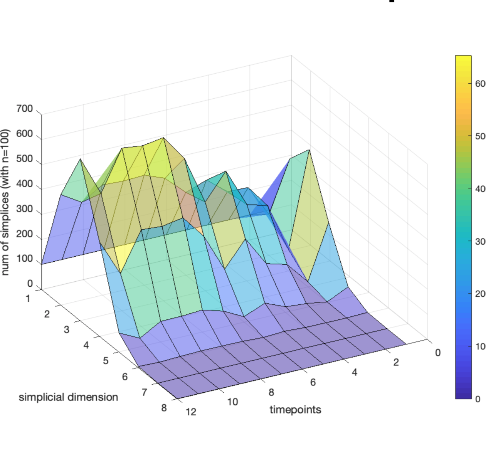[E5] What About Higher-Order Cellular Complexity? An Inquiry with Topological Simplicial Analysis
Baihan Lin, Raul Rabadan, Nikolaus Kriegeskorte
NeurIPS 2019 Workshop on Learning Meaningful Representations of Life (LMRL)
[ arXiv to come ] [ poster ] [ bibTex ] [ code ] [ abstract ]The lack of a formal link between cell-cell cohabitation and its emergent dynamics into cliques during development has hampered our understanding of how cell populations proliferate, differentiate, and compete, i.e. the cell ecology. With the advancement of single-cell RNA-sequencing (RNA-seq), we have now come closer to describing such a link by taking cell-specific transcriptional programs into account, constructing graphs of a network that reflect the similarity of gene expression, and analyzing these graphs using algebraic topology. We proposed single-cell topological simplicial analysis (scTSA). Applying this approach to single-cell gene expression profiles from local networks of cells in different developmental stages with different outcomes revealed a previously unseen topology of cellular ecology. These networks contain an abundance of cliques of single-cell profiles bound into cavities that guide the emergence of more complicated habitation forms. We visualize these ecological patterns with topological simplicial architectures of these networks, compared with the null models. Benchmarked on single-cell RNA-seq of zebrafish embryogenesis over 25 cell types and 12 time steps, our approach highlights the gastrulation as the most critical stage, consistent with consensus in developmental biology. As a nonlinear, model-independent, and unsupervised framework, our approach can also be applied to tracing multi-scale cell lineage, identifying critical stages, or creating pseudo-time series.
-
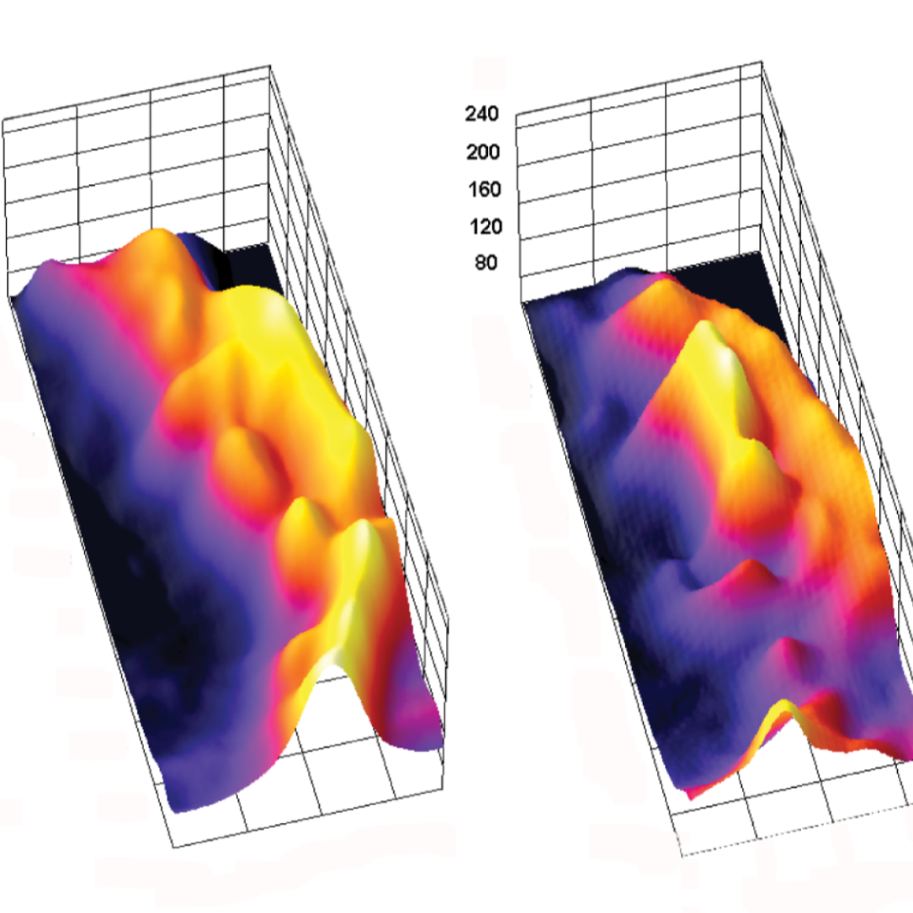[J6] Influence of Ocular Dominance Columns and Patchy Callosal Connections on Binocularity in Lateral Striate Cortex: Long Evans vs. Albino Rats
Adrian Andelin, Zane Doyle, Robyn Laing, Joseph Turecek, Baihan Lin, and Jaime Olavarria
Journal of Comparative Neurology
[ pdf ] [ bibTex ] [ code ] [ abstract ]In albino rats, it has been reported that lateral striate cortex (V1) is highly binocular, and that input from the ipsilateral eye to this region comes through the callosum. In contrast, in Long Evans rats, this region is nearly exclusively dominated by the contralateral eye even though it is richly innervated by the callosum (Laing, Turecek, Takahata, & Olavarria, 2015). We hypothesized that the inability of callosal connections to relay ipsilateral eye input to lateral V1 in Long Evans rats is a consequence of the existence of ocular dominance columns (ODCs), and of callosal patches in register with ipsilateral ODCs in the binocular region of V1 (Laing et al., 2015). We therefore predicted that in albino rats input from both eyes intermix in the binocular region, without segregating into ODCs, and that callosal connections are not patchy. Confirming our predictions, we found that inputs from both eyes, studied with the transneuronal tracer WGA-HRP, are intermixed in the binocular zone of albinos, without segregating into ODCs. Similarly, we found that callosal connections in albino rats are not patchy but instead are distributed homogeneously throughout the callosal region in V1. We propose that these changes allow the transcallosal passage of ipsilateral eye input to lateral striate cortex, increasing its binocularity. Thus, the binocular region in V1 of albino rats includes lateral striate cortex, being therefore about 25% larger in area than the binocular region in Long Evans rats. Our findings provide insight on the role of callosal connections in generating binocular cells.
-
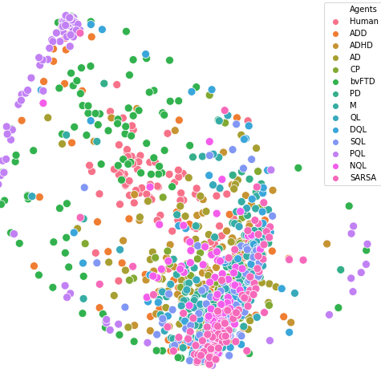[E4] Modeling Neurological and Psychiatric Disorders with Reward Biased Reinforcement Learning Models
Baihan Lin.
TIPS 2019
[ link ] [ bibTex ] [ code ] [ abstract ]Drawing an inspiration from behavioral studies of human decision making, we propose here a general parametric framework for a reinforcement learning problem, which extends the standard Q-learning approach to incorporate a two-stream framework of reward processing with biases biologically associated with several neurological and psychiatric conditions, including Parkinson's and Alzheimer's diseases, attention-deficit/hyperactivity disorder (ADHD), addiction, and chronic pain. For AI community, the development of agents that react differently to different types of rewards can enable us to understand a wide spectrum of multi-agent interactions in complex real-world socioeconomic systems. Empirically, the proposed model outperforms Q-Learning and Double Q-Learning in artificial scenarios with certain reward distributions and real-world human decision making gambling tasks. Moreover, from the behavioral modeling perspective, our parametric framework can be viewed as a first step towards a unifying computational model capturing reward processing abnormalities across multiple mental conditions and user preferences in long-term recommendation systems.
-
 [C4] Visualizing Representational Dynamics with Multidimensional Scaling Alignment
[C4] Visualizing Representational Dynamics with Multidimensional Scaling Alignment
Baihan Lin, Marieke Mur, Tim Kietzmann, Nikolaus Kriegeskorte
CCN 2019
[ arXiv ] [ link ] [ bibTex ] [ code ] [ abstract ]Representational similarity analysis (RSA) has been shown to be an effective framework to characterize brain-activity profiles and deep neural network activations as representational geometry by computing the pairwise distances of the response patterns as a representational dissimilarity matrix (RDM). However, how to properly analyze and visualize the representational geometry as dynamics over the time course from stimulus onset to offset is not well understood. In this work, we formulated the pipeline to understand representational dynamics with RDM movies and Procrustes-aligned Multidimensional Scaling (pMDS), and applied it to neural recording of monkey IT cortex. Our results suggest that the the multidimensional scaling alignment can genuinely capture the dynamics of the category-specific representation spaces with multiple visualization possibilities, and that object categorization may be hierarchical, multi-staged, and oscillatory (or recurrent).
-
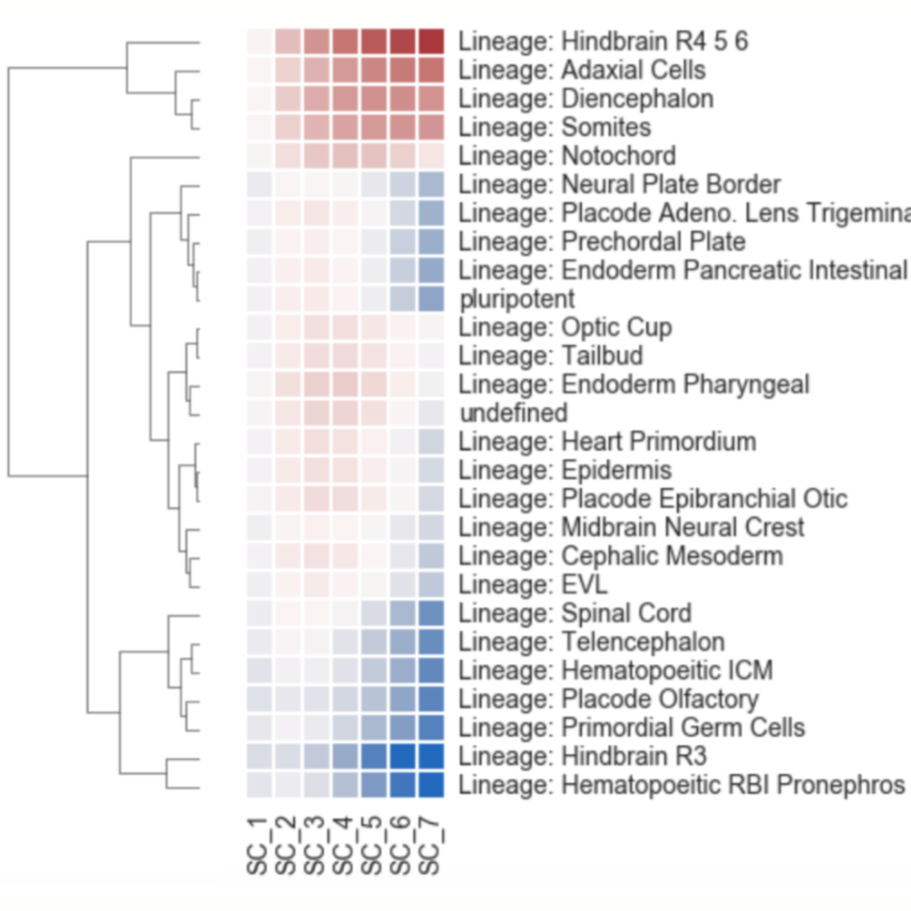[E3] Cliques of single-cell RNA-seq profiles reveal insights into cell ecology during development and differentiation
Baihan Lin
ISMB 2019
[ slides ] [ poster ] [ link ] [ bibTex ] [ code ] [ abstract ]The lack of a formal link between cell-cell cohabitation and its emergent dynamics into cliques during development has hampered our understanding of how cell populations proliferate, differentiate, and compete, i.e. the cell ecology. With the advancement of single-cell RNA-sequencing (RNA-seq), we have now come closer to describing such a link by taking cell-specific transcriptional programs into account, constructing graphs of a network that reflect the similarity of gene expression, and analyzing these graphs using algebraic topology. We proposed single-cell topological simplicial analysis (scTSA). Applying this approach to single-cell gene expression profiles from local networks of cells in different developmental stages with different outcomes revealed a previously unseen topology of cellular ecology. These networks contain an abundance of cliques of single-cell profiles bound into cavities that guide the emergence of more complicated habitation forms. We visualize these ecological patterns with topological simplicial architectures of these networks, compared with the null models. Benchmarked on single-cell RNA-seq of zebrafish embryogenesis over 25 cell types and 12 time steps, our approach highlights the gastrulation as the most critical stage, consistent with consensus in developmental biology. As a nonlinear, model-independent, and unsupervised framework, our approach can also be applied to tracing multi-scale cell lineage, identifying critical stages, or creating pseudo-time series.
-
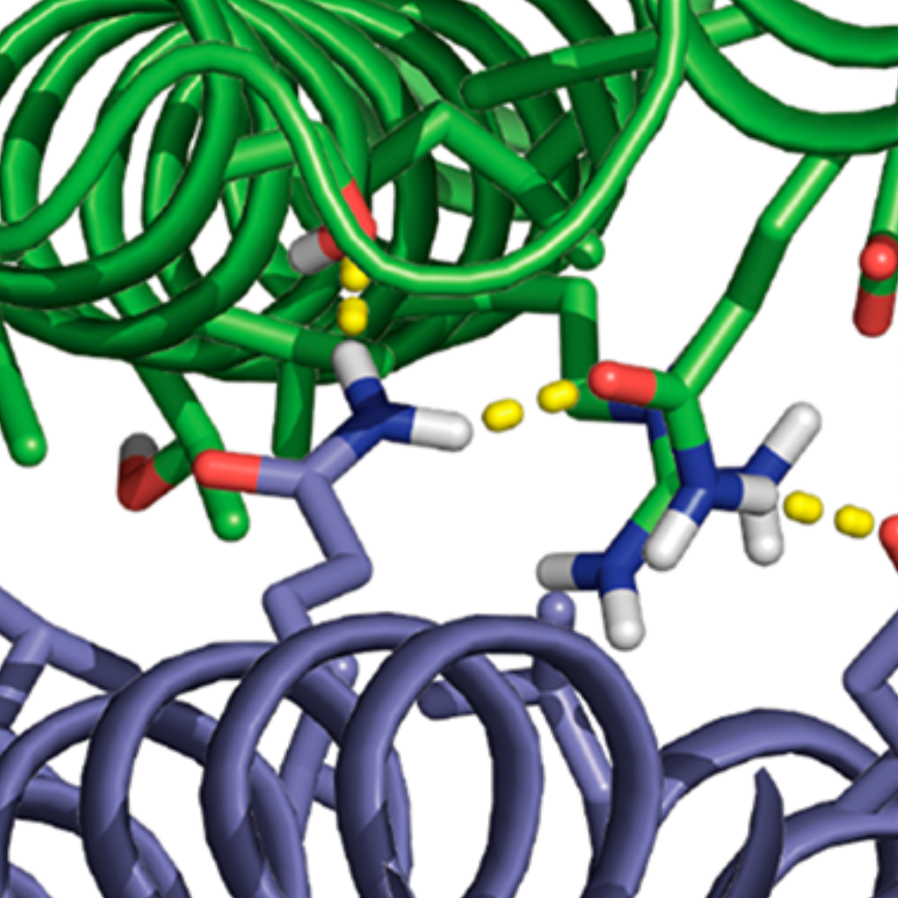[J5] Self-assembling 2d arrays with de novo protein building blocks
Zibo Chen, Matthew Johnson, Jiajun Chen, Matthew Bick, Scott Boyken, Baihan Lin, James DeYoreo, Justin Kollman, David Baker, and Frank DiMaio
Journal of the American Chemical Society
[ pdf ] [ JACS cover story ] [ bibTex ] [ code ] [ abstract ]Modular self-assembly of biomolecules in two dimensions (2D) is straightforward with DNA but has been difficult to realize with proteins, due to the lack of modular specificity similar to Watson–Crick base pairing. Here we describe a general approach to design 2D arrays using de novo designed pseudosymmetric protein building blocks. A homodimeric helical bundle was reconnected into a monomeric building block, and the surface was redesigned in Rosetta to enable self-assembly into a 2D array in the C12 layer symmetry group. Two out of ten designed arrays assembled to micrometer scale under negative stain electron microscopy, and displayed the designed lattice geometry with assembly size up to 100 nm under atomic force microscopy. The design of 2D arrays with pseudosymmetric building blocks is an important step toward the design of programmable protein self-assembly via pseudosymmetric patterning of orthogonal binding interfaces.
-
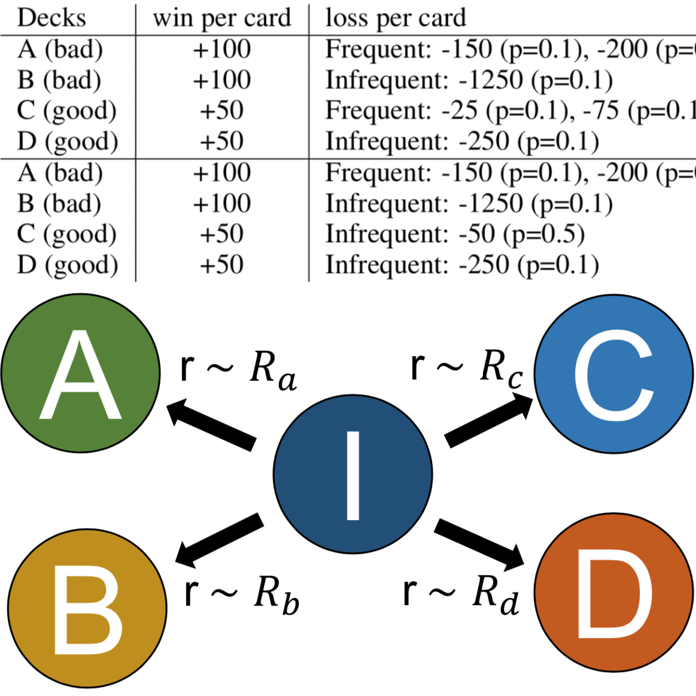[C3] Split Q Learning: Reinforcement Learning with Two-Stream Rewards
Baihan Lin, Djallel Bouneffouf, Guillermo Cecchi
IJCAI 2019
[ arXiv ] [ slides ] [ poster ] [ bibTex ] [ code ] [ abstract ]Drawing an inspiration from behavioral studies of human decision making, we propose here a general parametric framework for a reinforcement learning problem, which extends the standard Q-learning approach to incorporate a two-stream framework of reward processing with biases biologically associated with several neurological and psychiatric conditions, including Parkinson's and Alzheimer's diseases, attention-deficit/hyperactivity disorder (ADHD), addiction, and chronic pain. For AI community, the development of agents that react differently to different types of rewards can enable us to understand a wide spectrum of multi-agent interactions in complex real-world socioeconomic systems. Moreover, from the behavioral modeling perspective, our parametric framework can be viewed as a first step towards a unifying computational model capturing reward processing abnormalities across multiple mental conditions and user preferences in long-term recommendation systems.
-
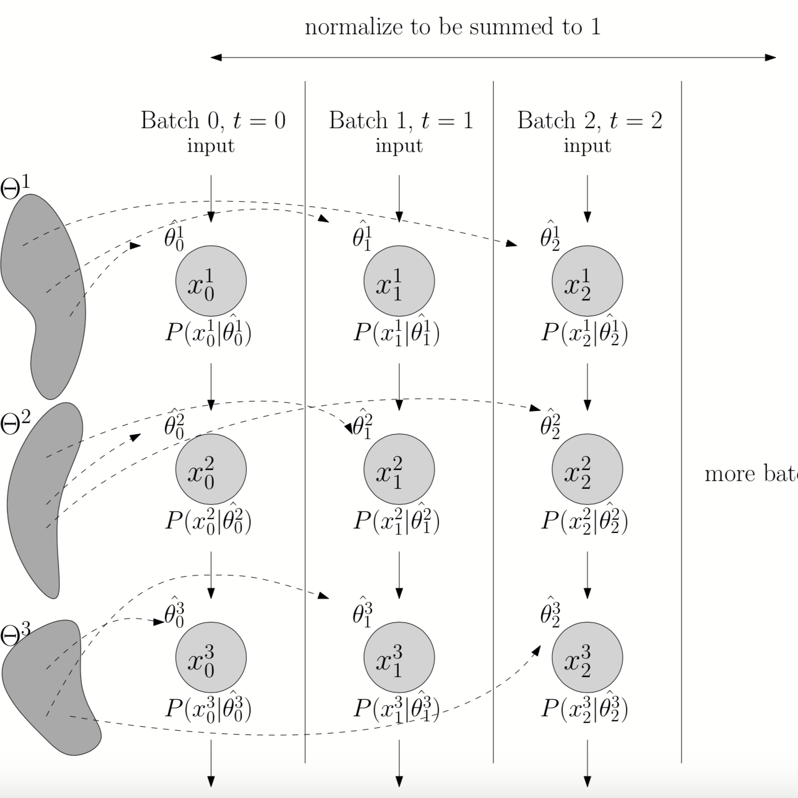[C2] Neural Networks as Model Selection with Incremental MDL Normalization
Baihan Lin
IJCAI 2019 Workshop on Human Brain and Artificial Intelligence (HBAI)
[ arXiv ] [ slides ] [ poster ] [ link ] [ bibTex ] [ code ] [ abstract ]If we consider the neural network optimization process as a model selection problem, the implicit space can be constrained by the normalizing factor, the minimum description length of the optimal universal code. Inspired by the adaptation phenomenon of biological neuronal firing, we propose a class of reparameterization of the activation in the neural network that take into account the statistical regularity in the implicit space under the Minimum Description Length (MDL) principle. We introduce an incremental version of computing this universal code as normalized maximum likelihood and demonstrated its flexibility to include data prior such as top-down attention and other oracle information and its compatibility to be incorporated into batch normalization and layer normalization. The empirical results showed that the proposed method outperforms existing normalization methods in tackling the limited and imbalanced data from a non-stationary distribution benchmarked on computer vision and reinforcement learning tasks. As an unsupervised attention mechanism given input data, this biologically plausible normalization has the potential to deal with other complicated real-world scenarios as well as reinforcement learning setting where the rewards are sparse and non-uniform. Further research is proposed to discover these scenarios and explore the behaviors among different variants.
2018
-
[C1] Contextual Bandit with Adaptive Feature Extraction
Baihan Lin, Guillermo Cecchi, Djallel Bouneffouf, Irina Rish
IEEE ICDM 2018 Workshop on Data Science and Big Data Analytics (DSBDA)
[ arXiv ] [ bibTex ] [ code ] [ abstract ]We consider an online decision making setting known as contextual bandit problem, and propose an approach for improving contextual bandit performance by using an adap- tive feature extraction (representation learning) based on online clustering. Our approach starts with an off-line pre-training on unlabeled history of contexts (which can be exploited by our approach, but not by the standard contextual bandit), followed by an online selection and adaptation of encoders. Specifically, given an input sample (context), the proposed approach selects the most appropriate encoding function to extract a feature vector which becomes an input for a contextual bandit, and updates both the bandit and the encoding function based on the context and on the feedback (reward). Our experiments on a variety of datasets, and both in stationary and non-stationary environments of several kinds demonstrate clear advantages of the proposed adaptive representation learning over the standard contextual bandit based on "raw" input contexts.
2017
-
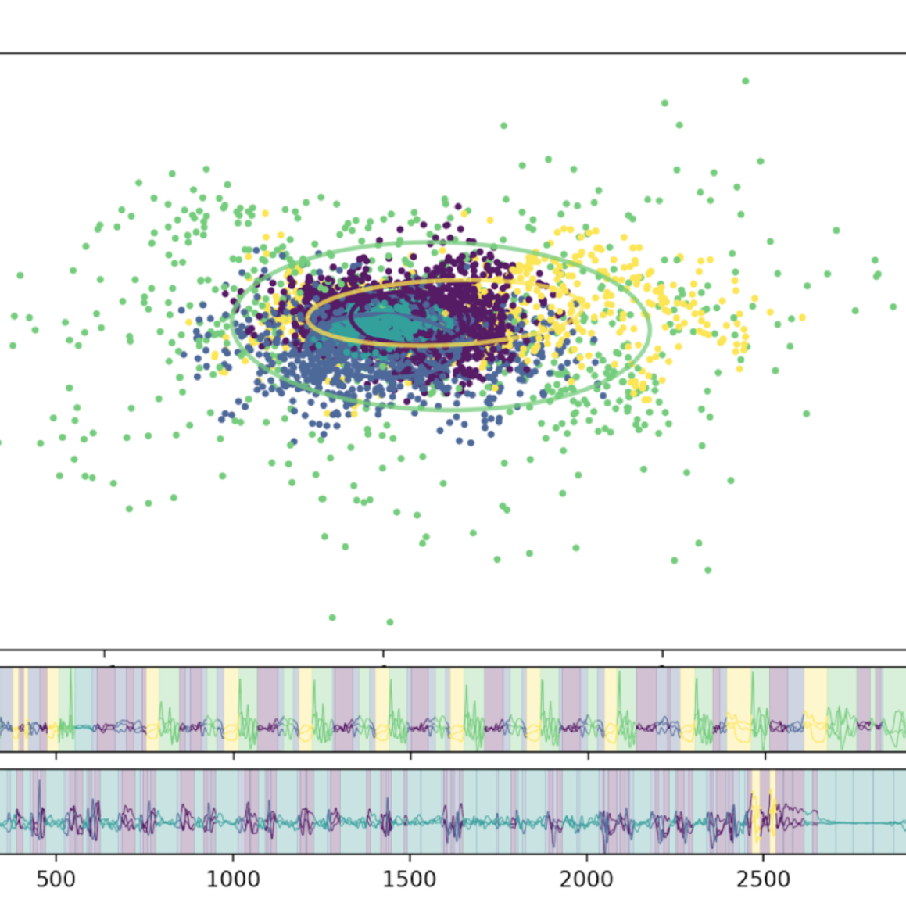[E2] Parkinson’s disease digital biomarker discovery with optimized transitions and inferred markov emissions
Avinash Bukkittu, Baihan Lin, Trung Vu, and Itsik Pe’er
RECOMB/ISCB 2017 Conference on Regulatory & Systems Genomics
[ arXiv ] [ slides ] [ bibTex ] [ code ] [ abstract ]We search for digital biomarkers from Parkinson's Disease by observing approximate repetitive patterns matching hypothesized step and stride periodic cycles. These observations were modeled as a cycle of hidden states with randomness allowing deviation from a canonical pattern of transitions and emissions, under the hypothesis that the averaged features of hidden states would serve to informatively characterize classes of patients/controls. We propose a Hidden Semi-Markov Model (HSMM), a latent-state model, emitting 3D-acceleration vectors. Transitions and emissions are inferred from data. We fit separate models per unique device and training label. Hidden Markov Models (HMM) force geometric distributions of the duration spent at each state before transition to a new state. Instead, our HSMM allows us to specify the distribution of state duration. This modified version is more effective because we are interested more in each state's duration than the sequence of distinct states, allowing inclusion of these durations the feature vector.
-
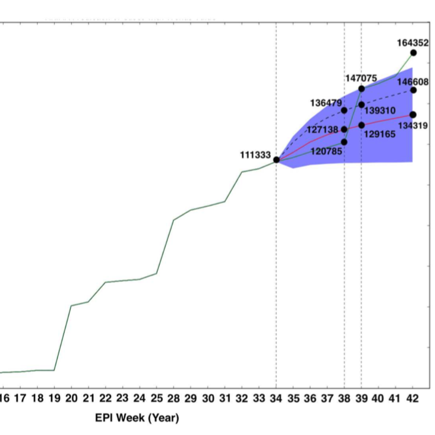[J4] Dynamic Forecasting of Zika Epidemics Using Google Trends
Yue Teng, Dehua Bi, Guigang Xie, Yuan Jin, Yong Huang, Baihan Lin, Xiaoping An, Dan Feng, and Yigang Tong
PLoS One
[ pdf ] [ bibTex ] [ abstract ]We developed a dynamic forecasting model for Zika virus (ZIKV), based on real-time online search data from Google Trends (GTs). It was designed to provide Zika virus disease (ZVD) surveillance and detection for Health Departments, and predictive numbers of infection cases, which would allow them sufficient time to implement interventions. In this study, we found a strong correlation between Zika-related GTs and the cumulative numbers of reported cases (confirmed, suspected and total cases; p <0.001). Then, we used the correlation data from Zika-related online search in GTs and ZIKV epidemics between 12 February and 20 October 2016 to construct an autoregressive integrated moving average (ARIMA) model (0, 1, 3) for the dynamic estimation of ZIKV outbreaks. The forecasting results indicated that the predicted data by ARIMA model, which used the online search data as the external regressor to enhance the forecasting model and assist the historical epidemic data in improving the quality of the predictions, are quite similar to the actual data during ZIKV epidemic early November 2016. Integer-valued autoregression provides a useful base predictive model for ZVD cases. This is enhanced by the incorporation of GTs data, confirming the prognostic utility of search query based surveillance. This accessible and flexible dynamic forecast model could be used in the monitoring of ZVD to provide advanced warning of future ZIKV outbreaks.
-
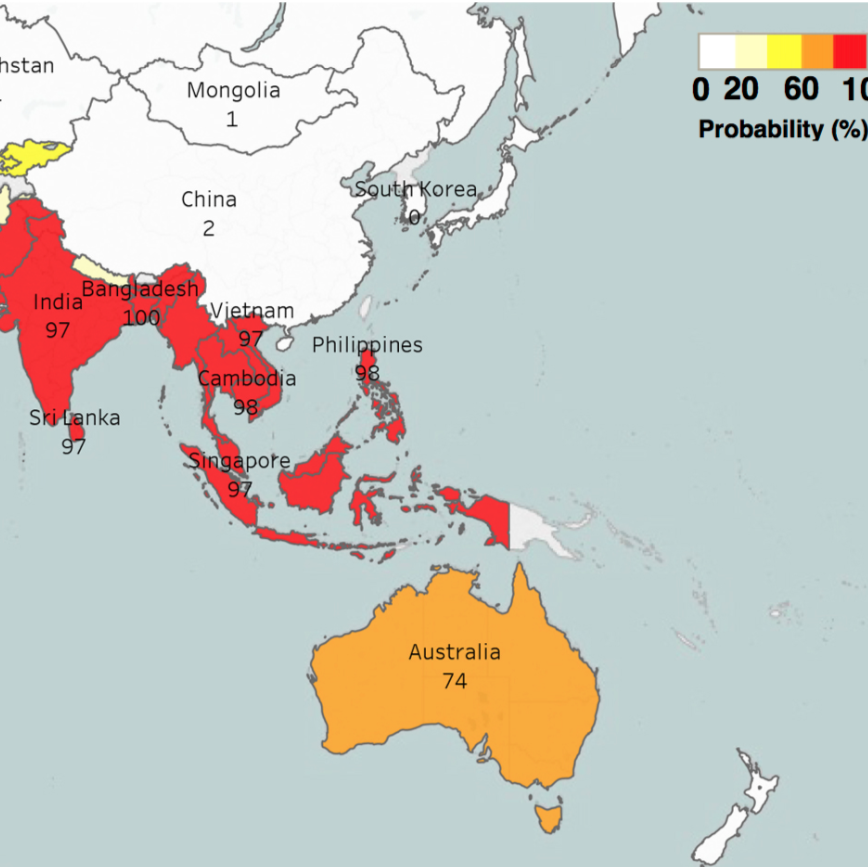[J3] Model-informed risk assessment for Zika virus outbreaks in the Asia-Pacific regions
Yue Teng, Dehua Bi, Guigang Xie, Yuan Jin, Yong Huang, Baihan Lin, Xiaoping An, Yigang Tong, and Dan Feng
Journal of Infection
[ pdf ] [ bibTex ] [ abstract ]Recently, Zika virus (ZIKV) has been recognized as a significant threat to global public health. The disease was present in large parts of the Americas, the Caribbean, and also the western Pacific area with southern Asia during 2015 and 2016. However, little is known about the factors affecting the transmission of ZIKV. We used Gradient Boosted Regression Tree models to investigate the effects of various potential explanatory variables on the spread of ZIKV, and used current with historical information from a range of sources to assess the risks of future ZIKV outbreaks. Our results indicated that the probability of ZIKV outbreaks increases with vapor pressure, the occurrence of Dengue virus, and population density but decreases as health expenditure, GDP, and numbers of travelers. The predictive results revealed the potential risk countries of ZIKV infection in the Asia-Pacific regions between October 2016 and January 2017. We believe that the high-risk conditions would continue in South Asia and Australia over this period. By integrating information on eco-environmental, social-economical, and ZIKV-related niche factors, this study estimated the probability for locally acquired mosquito-borne ZIKV infections in the Asia-Pacific region and improves the ability to forecast, and possibly even prevent, future outbreaks of ZIKV.
-
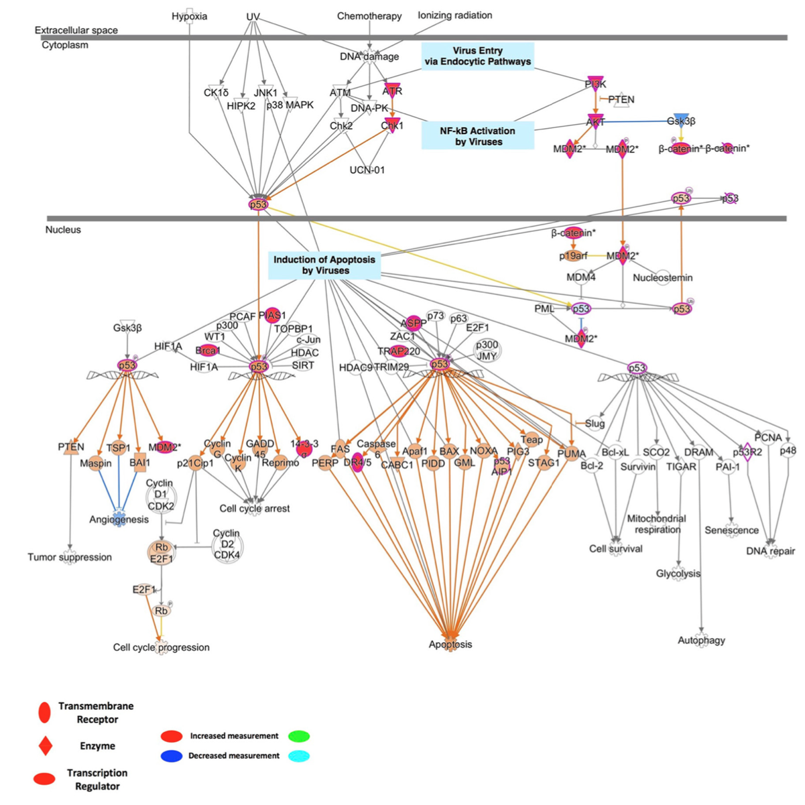[J2] An Integrative Analysis Reveals a Central Role of P53 Activation via MDM2 in Zika Virus Infection Induced Cell Death
Yue Teng, Shufeng Liu, Xiaocan Guo, Shuxia Liu, Yuan Jin, Tongtong He, Dehua Bi, Pei Zhang, Baihan Lin, Xiaoping An, Dan Feng, Zhiqiang Mi and Yigang Tong
Frontiers in cellular and infection microbiology
[ pdf ] [ bibTex ] [ abstract ]Zika virus (ZIKV) infection is an emerging global threat that is suspected to be associated with fetal microcephaly. However, the molecular mechanisms underlying ZIKV disease pathogenesis in humans remain elusive. Here, we investigated the human protein interaction network associated with ZIKV infection using a systemic virology approach, and reconstructed the transcriptional regulatory network to analyze the mechanisms underlying ZIKV-elicited microcephaly pathogenesis. The bioinformatics findings in this study show that P53 is the hub of the genetic regulatory network for ZIKV-related and microcephaly-associated proteins. Importantly, these results imply that the ZIKV capsid protein interacts with mouse double-minute-2 homolog (MDM2), which is involved in the P53-mediated apoptosis pathway, activating the death of infected neural cells. We also found that synthetic mimics of the ZIKV capsid protein induced cell death in vitro and in vivo. This study provides important insight into the relationship between ZIKV infection and brain diseases.
2016
-
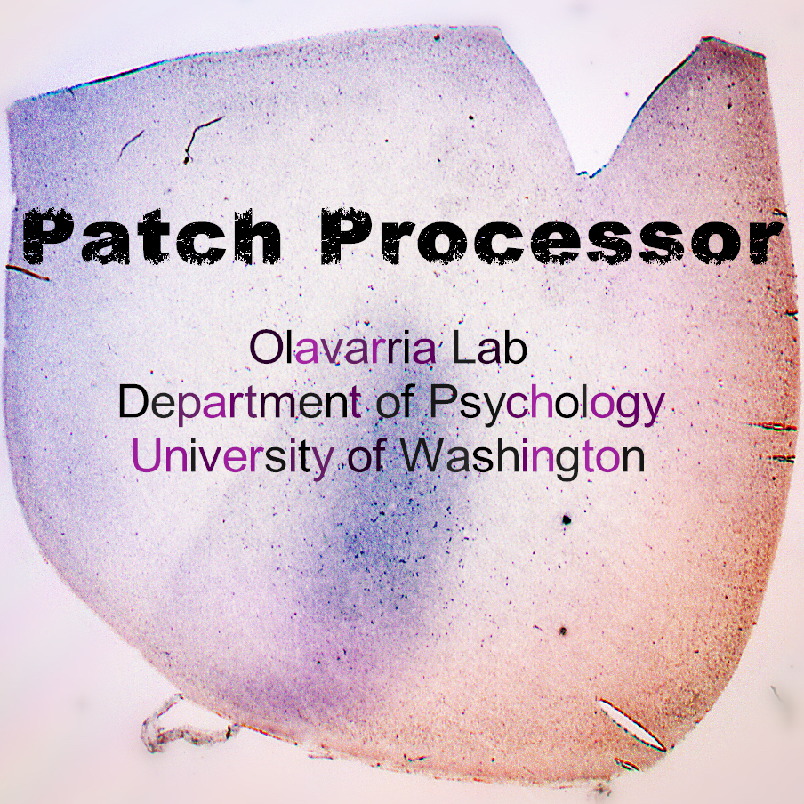[E1] Ocular Dominance Columns in Rat Visual Cortex: a Quantitative Model to Analyze Deprivation-Induced Cortical Plasticity
Baihan Lin, Adrian K Andelin, Jaime F Olavarria
NeuroFutures Conference 2016
[ pdf ] [ link ] [ bibTex ] [ demo ] [ code ] [ abstract ]What is the effect of sensory deprivation on brain development? Ocular Dominance Columns (ODCs) have been extensively used to study the mechanism of cortical plasticity, despite specific functions of ODCs elusive. Using a combination of transneuronal tracing, in situ hybridization for the immediate early gene Zif268 and electrophysiological recordings, our lab recently showed that the primary visual cortex (V1) in pigmented rats has ODCs correlated with callosal inputs from the opposite hemispheres. Using similar methods, my project aims to understand the effect of monocular deprivation (MD) on the newly discovered system of ODCs in rat visual cortex. I hypothesized that the manipulation of visual input would impact the development and recovery of eye-specific circuitry. By disrupting the visual input permanently or temporarily in early postnatal life, our lab has been able to measure the deleterious effects on map development, critical periods for these effects and potential for recovery. My project used monocular eyelid suture and enucleation to study the effect of MD on the organization of ODCs in pigmented rats. By using our experience-dependent model we expect to elucidate the principles and mechanisms underlying the development of cortical modular architecture in mammals. My result showed a clear shift in Hubel-Wiesel ocular dominance scale in central segment and clear desegregation in ODC in MD rats. I also developed a Java-based software and Matlab protocol to quantify this model. As our hypothesis is supported, our novel model may shed new lights on plasticity research, which can guide future clinical studies on the treatment and prognosis of patients suffering eye defects during early development by either innate or incidental pathological causes.
2015
-
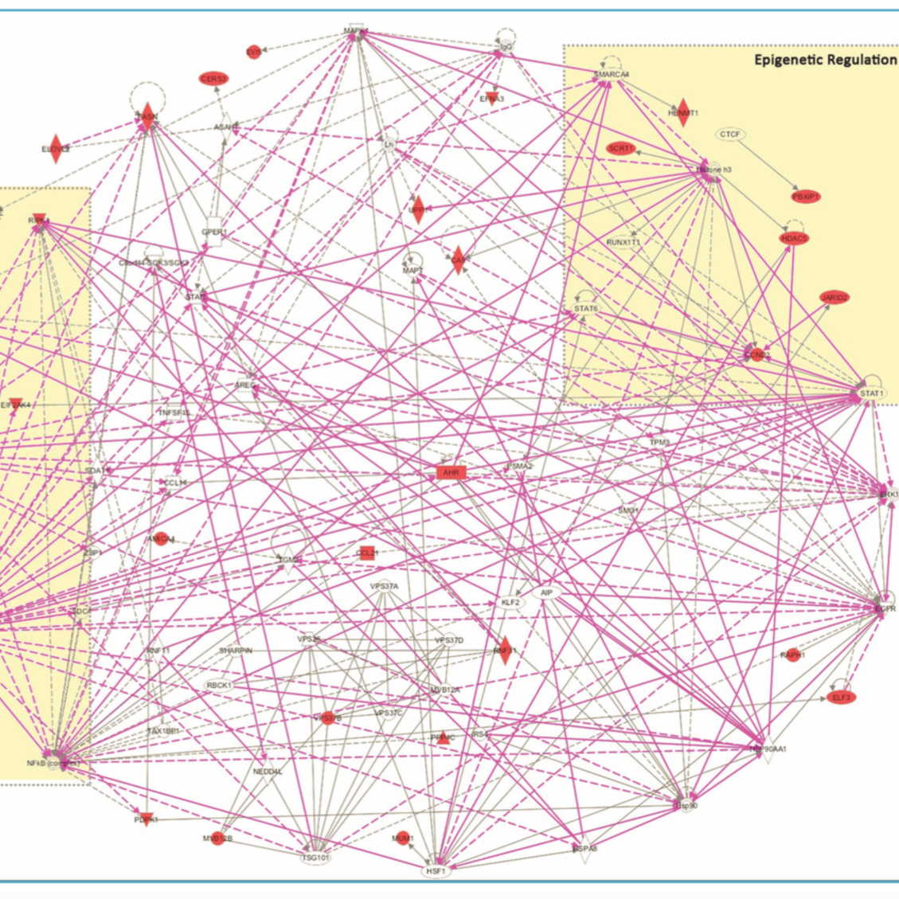[J1] Systematic Genome-wide Screening and Prediction of microRNAs in EBOV During the 2014 Ebolavirus Outbreak
Yue Teng, Yuzhuo Wang, Xianglilan Zhang, Wenli Liu, Hang Fan, Hongwu Yao, Baihan Lin, Ping Zhu, Wenjun Yuan, Yigang Tong and Wuchun Cao
Scientific Reports
[ pdf ] [ bibTex ] [ abstract ]Recently, several thousand people have been killed by the Ebolavirus disease (EVD) in West Africa, yet no current antiviral medications and treatments are available. Systematic investigation of ebolavirus whole genomes during the 2014 outbreak may shed light on the underlying mechanisms of EVD development. Here, using the genome-wide screening in ebolavirus genome sequences, we predicted four putative viral microRNA precursors (pre-miRNAs) and seven putative mature microRNAs (miRNAs). Combing bioinformatics analysis and prediction of the potential ebolavirus miRNA target genes, we suggest that two ebolavirus coding possible miRNAs may be silence and down-regulate the target genes NFKBIE and RIPK1, which are the central mediator of the pathways related with host cell defense mechanism. Additionally, the ebolavirus exploits the miRNAs to inhibit the NF-kB and TNF factors to evade the host defense mechanisms that limit replication by killing infected cells, or to conversely trigger apoptosis as a mechanism to increase virus spreading. This is the first study to use the genome-wide scanning to predict microRNAs in the 2014 outbreak EVD and then to apply systematic bioinformatics to analyze their target genes. We revealed a potential mechanism of miRNAs in ebolavirus infection and possible therapeutic targets for Ebola viral infection treatment.
Life
I am always curious about the world and I like exploring new things.
Although New York is not like Seattle with all the Nature, I try to maintain my hobbies in skateboarding and longbaording (well, kayaking is obviously not gonna happen here easily). Beyond my footsteps, I enjoy traveling to different places (so far only 3 continents reached) - I am planning a roadtrip across Northern Europe some time next year.
woodworking, DIY, electronics and interior design. A recent woodwork project of mine is a modern sofa (process). As another project under development, I am creating tangible representations of high-dimensional interaction data (more details yet to come).
Other than these life bits, I play flute and am currently learning Jazz and guitar, well, at least while my neighbors and my cats can still bear it. ;)
More bits of life can be found here.